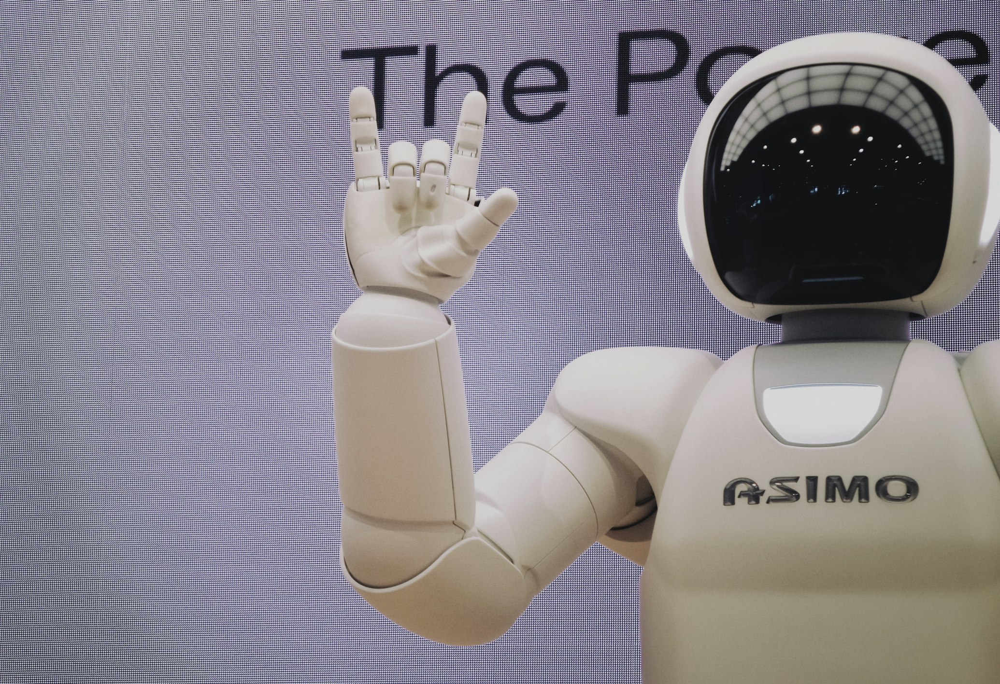

Soluciones de Tecnología a la Medida
Creamos las herramientas que tu visión educativa necesita para impactar y crecer en el mundo digital.
Automatización con Bots Educativos
Diseñamos "asistentes digitales" que sirven a un propósito pedagógico para acelerar la investigación, personalizar el aprendizaje y liberar el valioso tiempo de los educadores.
